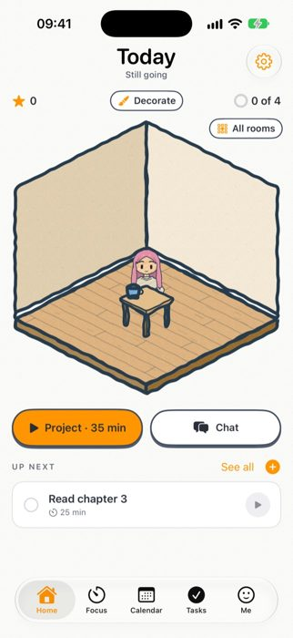
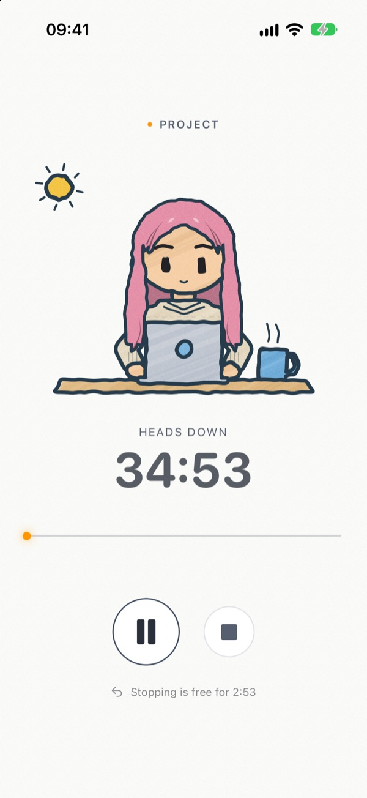

Marketing case study · DoFocus · pre-launch
Selling focus to people who hate being told to focus.
DoFocus is an iOS focus app where a hand-drawn buddy works beside you. I own its front end and all of its marketing. This is how I sized up the category, picked a position, priced it, and planned the launch.
← Back to the project

01 · The category
Everyone sells focus. Most sell it with a stick.
I benchmarked the five apps a DoFocus user is most likely to have tried. The pattern: the category is crowded and well-rated — every one sits at 4.7★ or above — so “good timer” is not a reason to switch. What differs is how each app treats you when you slip.
| App | Rating | Ratings | Chart (US, top free) | App Store subtitle | If you quit early… |
|---|---|---|---|---|---|
| Forest | 4.8★ | 50K | Productivity #197 | Pomodoro Timer, ADHD & Study | Your tree dies |
| Flora | 4.8★ | 83K | Productivity, unranked | To-do list, habit tracker | Your tree dies |
| Opal | 4.7★ | 91K | Productivity #75 | Focus, App Blocker & Timer | The apps stay blocked |
| Focus Friend | 4.8★ | 9.8K | Productivity #120 | ADHD-friendly Focus Timer | Your bean is sad |
| Finch | 4.9★ | 771K | Health & Fitness #19 | Daily Journal & Habit Tracker | n/a — a self-care pet, not a timer |
| DoFocus | — | — | in TestFlight | (see 04) | Nothing, if it's in the first minutes — a mis-start isn't counted |
Source: US App Store listings, read 3 Nov 2026 — Forest · Flora · Opal · Focus Friend · Finch. Ratings and ranks move daily.
Number of ratings — a proxy for reach
The biggest audience belongs to the app that makes you care for a character, not the one that punishes you. That's the lane DoFocus borrows from.
Positioning — my read of the category
Finch plans habits, not work. Nobody combined a companion with a real day plan — tasks, calendar, blocking.
02 · Position
Not a coach. A friend at the next desk.
My bet: most people don't lack a timer — they've already quit one. Failure states — a dead tree, a locked phone — work until the first bad day, then the app becomes a reminder that you failed. So every product decision got checked against one line:
“Whatever you focus on, I'll be doing it too.” — the buddy's first words in onboarding
| Category habit | What DoFocus does instead | Why it matters for marketing |
|---|---|---|
| Punish quitting | A mis-start in the first minutes can be abandoned and isn't counted; no strict lock mode | Nothing to feel guilty about = nothing to churn away from |
| Reward = currency | Coins were removed; you earn stars and decorate your buddy's room | Progress you can screenshot and share |
| Generic timer | Pick an activity (study, reading, project…) and the buddy does the same thing | Every session looks different on video |
| Can “cheat” to finish | Sessions can be made longer, never fast-forwarded to the reward | The reward stays honest, so it stays worth something |
| Lives only in the app | Lock-screen Live Activity, Dynamic Island, home-screen widgets | Free, daily brand impressions outside the app |
03 · Pricing
Charge for what costs us money. Give away the habit.
Every chat with the buddy is an AI call we pay for; a timer costs nothing to run. So the line between free and paid follows the cost — and the habit people need to form before they'd ever pay stays free.
| Feature | Free | Plus |
|---|---|---|
| Focus timer & app blocking | Included | Included |
| Tasks & calendar sync | Included | Included |
| Buddy, room & shop | Included | Included |
| Chat & planning with the buddy | 3 messages a day | Unlimited planning |
| New content, ongoing | — | Yes |
What the category charges (US)
| App | Monthly | Yearly | Yearly saves |
|---|---|---|---|
| Opal | $19.99 | $99.99 | 58% |
| Forest | $5.99 | $35.99 | 50% |
| Focus Friend | $3.99 | $19.99 | 58% |
| Flora | Free; optional $0.99–$1.99 extras | ||
Early-bird prices for Forest. Finch lists Plus at several prices from $5.99 to $69.99 without labelling the terms, so it's left out.
Yearly plan, per month
The closest competitor — a companion timer — prices five times lower than the strictest one. DoFocus Plus sells a monthly and a yearly plan in one subscription group; the paywall reads live App Store prices and shows the yearly saving. Final prices are set at launch.
04 · The funnel
Ask for money only after the habit has started.
Plus is never the first thing a new user sees. It appears at four moments, each placed after the user has already got something out of the app.
| Moment | What the user sees | Why there |
|---|---|---|
| Onboarding, last page | “Chat with me” — plan your day together, 3 free messages a day, more with Plus | Sets expectations early, so the limit later isn't a surprise |
| 3rd finished session | A small card on the reward screen: “Tell me how that went?”, once only, hidden for Plus users | By the third session the habit has started, and the ask arrives as a question, not a sales pitch |
| 4th chat message of the day | The paywall opens; what you typed is kept | Intent is highest mid-conversation, and losing your text would turn a sale into a complaint |
| Settings, top card | Get Plus · Manage · Restore purchases | Always findable, including for App Review |
Before the paywall, onboarding has to get people to a first session. It asks for the minimum: say hi, make the buddy look like you, pick what you usually focus on — then two optional permission pages (calendar, app blocking) that can be skipped, and a “Start my first focus” button that begins a session straight away.
05 · Launch plan
Two languages, one character, lots of screen recordings.
The buddy is the ad. A five-second clip of it studying next to someone's real lock screen explains the product faster than any feature list — and the app ships in English and Simplified Chinese, so the same clips can run on both sides.
| Channel | Audience | Content | Status |
|---|---|---|---|
| App Store page | People searching “focus timer”, “pomodoro”, “study” | Subtitle built around the buddy, e.g. “Focus timer with a buddy”; screenshots led by the room and the lock screen | Planned |
| TikTok · Instagram Reels | English-speaking students | Study-with-me videos with the Live Activity on screen; room makeovers after a week of sessions | Planned |
| Xiaohongshu (RED) | Chinese-speaking students, here and abroad | Aesthetic desk and widget setups; the buddy dressed up as you; full Chinese interface | Planned |
| Campus · Waterloo | Exam season, co-op students | TestFlight invites during midterms; feedback straight into the product | Planned |
Search terms come from what competitors put in their 30-character subtitles: “focus” and “timer” appear in three of five, “ADHD” in two, “habit tracker” in two.
06 · What I'll measure
Five numbers for the first 30 days.
DoFocus isn't on the App Store yet, so there are no results here — and I'd rather show an honest empty column than invented ones. These are the metrics I'll set baselines for in the first month.
| Metric | How it's counted | What it tells me | Result |
|---|---|---|---|
| Store conversion | Installs ÷ product-page views | Whether the buddy sells itself in screenshots | after launch |
| First-session rate | New users who finish one session on day 1 | Whether onboarding is short enough | after launch |
| Third-session rate | New users who reach session 3 within a week | How many ever see the Plus offer | after launch |
| Paywall conversion | Subscriptions ÷ paywall views, split by moment | Which of the four moments actually sells | after launch |
| Day-7 retention | Users with a session on day 7 | Whether “no guilt” keeps people longer than “dead tree” | after launch |